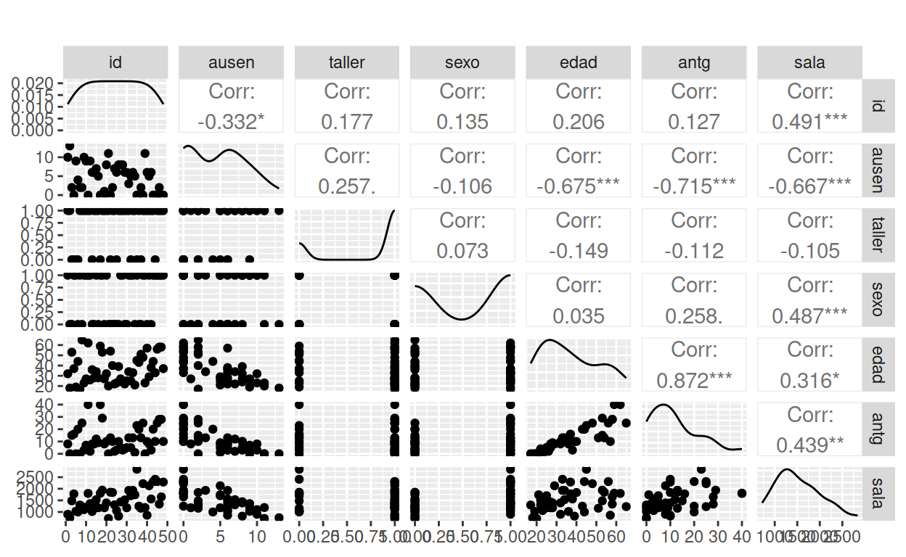

PRESENTACIÓN

El presente tutorial contiene preguntas relacionadas con los conceptos más importantes del modelo de regresión lineal múltiple y su presentación matricial, conceptos importante para la compresión del resto de la unidad.
CONCEPTOS
Diagrama de dispersión
herramienta gráfica, utili para la visualización de la relación que puede existir entre dos variables cuantitativas, basado en la forma que presenta la nube de puntos.
Coeficiente de correlación
Corresponde al coeficiente de correlación de Pearson (\(\rho\)), mide la relación lineal existente entre dos variables cuantitativas. \(0 \leq \rho \leq 1\)
Con una muestra de datos \((x,y)\) podemos estimar este valor \(\widehat{\rho}\), con el cual podemos realizar una prueba de hipótesis \(Ho: \rho =0\) vs \(Ha: \rho \neq 0\).
Forma matricial del MRL
Para facilitar su escritura, operaciones e interpretación del MRLM, se trabaja la forma matricial del modelo:
\[Y = X \beta + \varepsilon\] Donde :
\(Y\) : vector de valores de \(y\), variable dependiente (\(dim = n \times 1\))
\(X\) : matriz que contiene los valores de las \(k\) variables independientes (\(dim = n \times k\))
\(\varepsilon\) : vector de errores (\(dim = n \times 1\))
Conformando un sistema de \(n\) ecuaciones con \(k+1\) incognitas (\(\beta_{i}\), \(i=0,1,2,\dots k\))
Estimación MCO
El resultado de la minimización de la suma de cuadrados de los errores (derivacón parcial de \(S\) con respecto a \(\beta\))
\[S\left(\boldsymbol{\beta}\right) = \boldsymbol{\varepsilon}'\boldsymbol{\varepsilon} \left(\boldsymbol{y} - \boldsymbol{X\beta}\right)'\left(\boldsymbol{y} - \boldsymbol{X\beta}\right)\]
da como resultado:
\[\boldsymbol{\widehat\beta} = \left(\boldsymbol{X}'\boldsymbol{X}\right)^{-1}\ \boldsymbol{X}'\boldsymbol{y}\]
Supuestos del MRLM
Supuestos sobre los errores
Normalidad de los errores: Los errores son variables aleatorias normales. \(e \sim normal\)
Nodelo completo: Los errores tienen media cero. \(E[e] = 0\)
Homoscedasticidad :Los errores tienen varianza constante. \(V[e] = \sigma^{2}\)
No autocorrelación de errores : Los errores son mutuamente independientes. \(E[e_i, e_j] =0\)
MAPA

CÓDIGO R
| concepto | código |
|---|---|
| coeficiente de correlación | cor(x,y) |
| matriz de dispersión | plot(x,y) |
| matriz correlaciones dispersión | GGally::ggpairs(data) |
| estimacion MCO | lm(y ~ x1 + x2 + x3 , data = namedata) |
| estimación Steppwise | modelo_b0<- lm(y ~ 1, data=namedata) |
modelo_all <- lm(y ~ x1 + x2 + x3, data=namedata) |
|
| Validación de supuestos | |
| \(e \sim normal\) | Shapiro-Wilk : shapiro.test(x) |
Kolmogorow-Smirnov:
nortest::lillie.test(x) |
|
Jarque-Bera :
normtest::ajb.norm.test(x) |
|
Anderson Darling :
nortest::ad.test(x) |
|
| \(E[e] = 0\) | t.test(x) |
| \(V[e] = \sigma^{2}\) | Goldfeld-Quandt : gqtest(y ~ x) |
| \(E[e_i, e_j] =0\) | Durbin-Watson : lmtest::dwtest(y ~ x) |
CUESTIONARIO
Pregunta 1
¿Cuál de las siguientes es la forma general de la ecuación del modelo
de regresión múltiple?
\(( a ) \hspace{.3cm}\) \(X_{i1} + \beta_2X_{i2} + \dots+ \beta_kX_{ik} + \varepsilon_i\)
\(( b ) \hspace{.3cm}\) \(Y_i = \beta_0 + \beta_1X_{i1} + \beta_2X_{i2} + \dots+ \beta_kX_{ik} + \varepsilon_i\)
\(( c ) \hspace{.3cm}\) \(Y_i = \beta_0 + \beta_1X_{i1} + \beta_2X_{i2} + \dots+ \beta_kX_{ik}\)
\(( d ) \hspace{.3cm}\) \(Y_i = \beta_0^{2} + \beta_1^{2}X_{i1} + \beta_2^{2}X_{i2} + \dots+ \beta_k^{2}X_ {ik} + \varepsilon_i\)
Pregunta 2
¿Cuál es la distribución de probabilidad de los errores de un modelo de regresión lineal?
\(( a ) \hspace{.3cm}\) \(\epsilon_{i} \sim Normal(0, 1)\)
\(( b ) \hspace{.3cm}\) \(\epsilon_{i} \sim Uniforme(0, 1)\)
\(( c ) \hspace{.3cm}\) \(\epsilon_{i} \sim Normal(0, \sigma^2)\)
\(( d ) \hspace{.3cm}\) Puede tomar cualquier distribución.
Pregunta 3
Cuales son los supuestos sobre los errores de un modelo de regresión lineal múltiple?
Pregunta 4
La forma correcta de interpretar los coeficientes de regresión \({ \beta_j ~~donde\hspace{.3cm} j = 1, 2, \dots, k}\) es:
\(( a ) \hspace{.3cm}\) Indican el cambio en la respuesta media de \({Y}\) por unidad de incremento en el logaritmo de la respectiva variable \({X_j}\), cuando las demás predictoras permanecieron constantes.
\(( b ) \hspace{.3cm}\) Indican el cambio en la respuesta media de \({Y}\) por unidad de incremento en la respectiva variable \({X_j}\), cuando las demás predictoras permanecen constantes.
\(( c ) \hspace{.3cm}\) Indican el cambio en la respuesta media de \({Y}\) por unidad de incremento en la respectiva variable \({X_j}\), cuando las demás predictoras toman distintos valores no constantes.
\(( d ) \hspace{.3cm}\) Indican el cambio en la respuesta media de \({Y}\) por incremento del 200% en la respectiva variable \({X_j}\), cuando las demás predictoras permanecieron constantes.
Pregunta 5
¿Qué sucede si existen relaciones lineales fuertes entre las variables predictoras?
Pregunta 6
Una forma cuadrática se puede expresar matricialmente como:
\(( a ) \hspace{.3cm}\) \(\boldsymbol{xA}'\boldsymbol{x}\)
\(( b ) \hspace{.3cm}\) \(\boldsymbol{xA}'\boldsymbol{xx}\)
\(( c ) \hspace{.3cm}\) \(I\boldsymbol{Ax}\)
\(( d ) \hspace{.3cm}\) \(\boldsymbol{x}'\boldsymbol{Ax}\)
Pregunta 7
Por fuera de la diagonal de la matriz de varianzas-covarianzas asociadas a un vector aleatorio están:
\[ \boldsymbol{\Sigma_y} = V(\boldsymbol{y}) = \begin{bmatrix} \sigma_{11} &\sigma_{12} &\cdots &\sigma_{1n}\\ \sigma_{21} &\sigma_{22} &\cdots &\sigma_{2n}\\ \vdots &\vdots &\ddots &\vdots\\ \sigma_{n1} &\sigma_{n2} &\cdots &\sigma_{nn} \end{bmatrix} \]
Pregunta 8
La base de datos ausentismo contenida en paqueteMOD contiene las siguientes variables:
- id : identificación del empleado
- ausen : número de dias que un empleado se ausenta del trabajo en el último año
- taller : toma el valor de 1 si el empleado trabaja en el taller y 0 si no
- sexo : toma el valor de 1 si el empleado es un hombre y 0 si es una mujer
- edad : edad del empleado en años
- antg : antiguedad del empleado en la empresa
- sala : salrio del empleado
A partir de la siguiente matriz, cual de las variables aporta más a la explicación de la variabilidad de ausentismo?

PROBLEMAS
Problema 1
Para la base de datos vivienda, contenida en paqueteMOD, realice una exploración de las variables cuantitativas :
- preciom : precio de la vivienda
- areaconst : area construida
- parqueaderos : número de parqueaderos
- banios : número de baños
- habitaciones : número de habitaciones
library(paqueteMODELOS)
data(vivienda)library(paqueteMODELOS)
data(vivienda)
summary(vivienda[,4:8])library(paqueteMODELOS)
data(vivienda)
summary(vivienda[,4:8])Problema 2
Para la base de datos vivienda, contenida en paqueteMOD, realice una descripción de las variables cualitativas solo para tipo de vivienda apartamento :
- zona : ubicación del apartamento
- piso : piso de ubicación del apartamento
- estrato : estrato socio económico donde se encuentra la vivienda
library(paqueteMODELOS)
data(vivienda)
apartamentos=subset(vivienda, tipo=="Apartamento")
vivienda$zona = as.factor(vivienda$zona)library(paqueteMODELOS)
library(summarytools)
data(vivienda)
apartamentos=subset(vivienda, tipo=="Apartamento")
summarytools::freq()library(paqueteMODELOS)
data(vivienda)
apartamentos=subset(vivienda, tipo=="Apartamento")
summarytools::freq(apartamentos$zona, cumul = FALSE)
summarytools::freq(apartamentos$piso)
summarytools::freq(apartamentos$estrato)Problema 3
Para la base de datos vivienda, contenida en paqueteMOD, detecte si existen valores faltantes.
library(paqueteMODELOS)
data(vivienda)library(paqueteMODELOS)
data(vivienda)library(paqueteMODELOS)
# library(heatmaply)
data(vivienda)
# detecta el número de datos NA por variable
apply(X = is.na(vivienda), MARGIN = 2, FUN = sum)
# heatmaply::heatmaply_na(vivienda)
dim(vivienda)Problema 4
Para la base de datos vivienda, contenida en paqueteMOD, Determine si existe una gran cantidad de datos faltantes (NA) en alguna de las variables de las variables , Dado que existe una gran cantidad de información excluya todos los registros que contenga NAs. Cuantos registros quedan?
library(paqueteMODELOS)
data(vivienda)library(paqueteMODELOS)
data(vivienda)
viviendaSNA <- na.omit(vivienda)
apply(X = is.na(viviendaSNA), MARGIN = 2, FUN = sum)
dim(vivienda)
dim(viviendaSNA)Problema 5
Para la base de datos vivienda, contenida en paqueteMOD, estime las relaciones existentes entre las variables cuantitativas. ¿Qué ocurre cuando cambianos la escala de las variables?
library(paqueteMODELOS)
data(vivienda)library(paqueteMODELOS)
library(GGally)
data(vivienda)
ggpairs(vivienda[,4:8], title=" ") library(paqueteMODELOS)
library(GGally)
data(vivienda)
vivienda$preciom=log(vivienda$preciom)
vivienda$areaconst=log(vivienda$areaconst)
GGally::ggpairs(vivienda[,4:8], title=" ") Problema 6
Alrevisar la base de datos vivienda, contenida en paqueteMOD, Se detectó que en los registros se presenta una inconsistencia en la variable número de habitaciones.
Min. 1st Qu. Median Mean 3rd Qu. Max. NA's
0.000 3.000 3.000 3.605 4.000 10.000 3 Solucione ambos problemas eliminando los registros con número de
habitaciones habitaciones = 0.
library(paqueteMODELOS)
data(vivienda)library(paqueteMODELOS)
data(vivienda)
vivienda=vivienda[vivienda$habitaciones!=0,]
summary(vivienda$habitaciones)